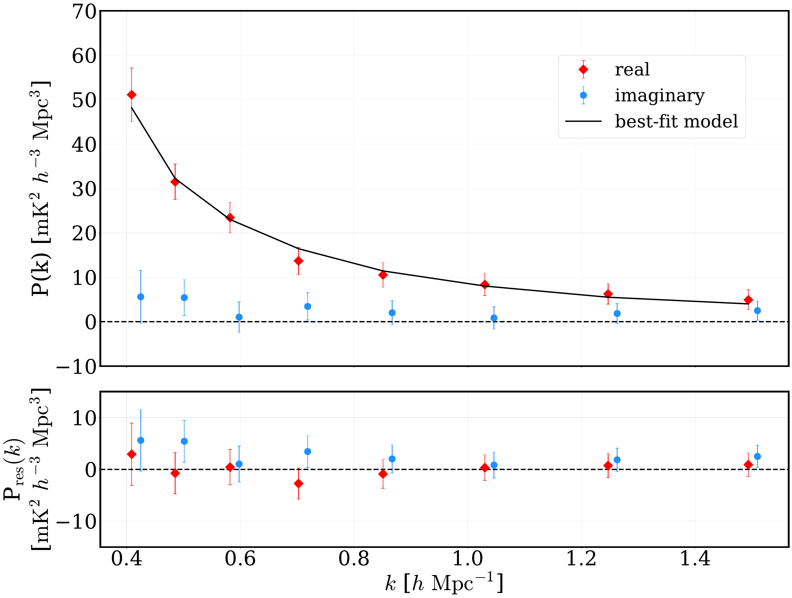
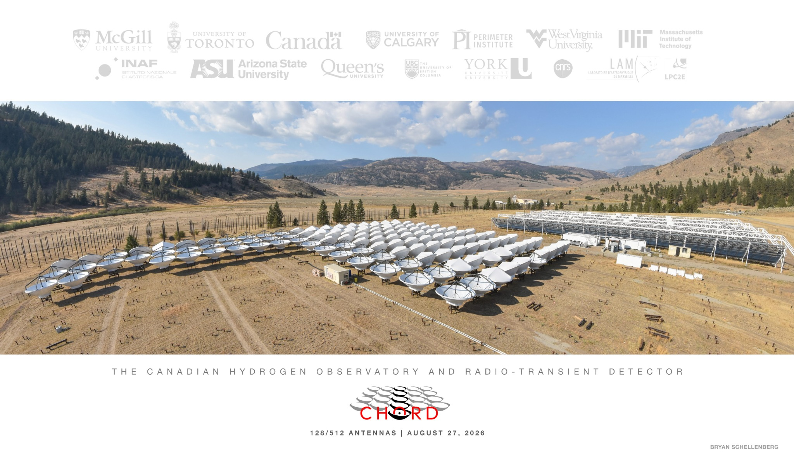
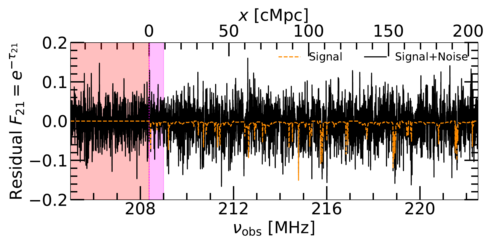
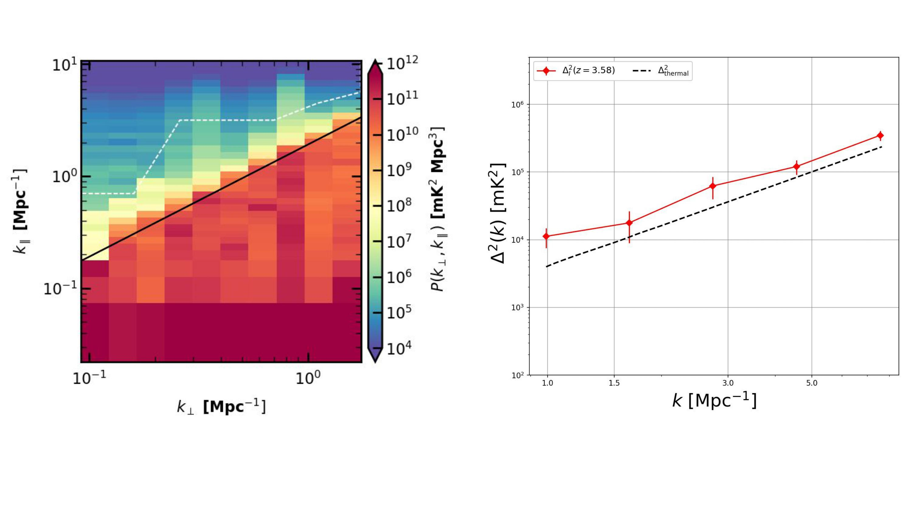
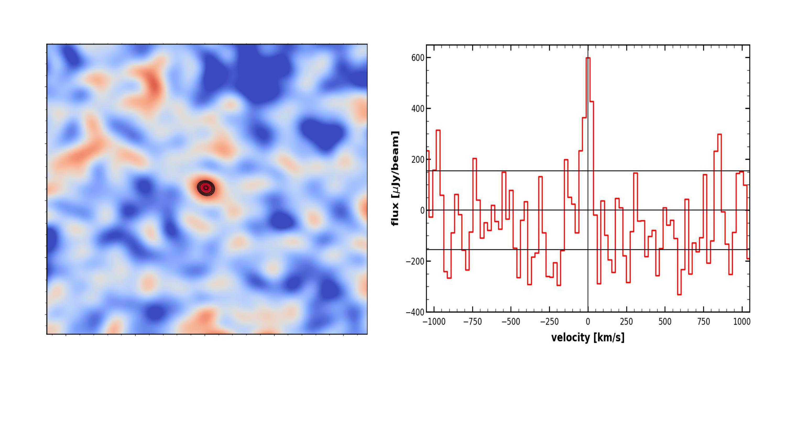

My research connects instruments to cosmology: calibrating radio telescopes, flagging human-made interference, removing foreground emission, and extracting and interpreting the weak 21 cm cosmological signal that remains. The projects below cover my current and recent work.
Line intensity mapping
I want to understand how a nearly smooth early Universe grew into the complex web of structure we see today. Line intensity mapping is an efficient way to attack that question. Rather than resolving individual galaxies, we make low-resolution maps of the sky at frequencies corresponding to atomic or molecular lines emitted in galaxies and in the intergalactic medium, and then measure the statistical fluctuations of the combined radiation field. A single survey covers an enormous cosmic volume, which is exactly the statistical power that precision cosmology needs.
My focus is the 21 cm line of neutral hydrogen, the hyperfine transition that traces atomic gas from the present day back to z ∼ 30. Measuring its auto-correlation power spectrum maps the distribution of matter and gives access to the baryon acoustic oscillation scale, the standard ruler that fixes the expansion history and therefore constrains the nature of dark energy.
The obstacle is dynamic range. Galactic synchrotron emission and extragalactic point sources are four to five orders of magnitude brighter than the 21 cm signal, and that foreground is coupled to a chromatic instrument response through the primary beam, mutual coupling between elements, and time- and frequency-dependent gains. Separating the two is an instrumental problem as much as an astrophysical one, and it is where most of my effort goes. I am currently doing this with two instruments at the Dominion Radio Astrophysical Observatory.

The first cosmological 21 cm auto-power detection
The Canadian Hydrogen Intensity Mapping Experiment, CHIME, is a transit radio interferometer at the Dominion Radio Astrophysical Observatory near Penticton, British Columbia. Four 20 m × 100 m cylindrical reflectors, with no moving parts, map the entire northern sky every day between 400 and 800 MHz. That band corresponds to neutral hydrogen at redshifts 0.8 to 2.5, which places CHIME squarely at the epoch where dark energy begins to dominate the expansion. It has been collecting data since 2018.
As science lead within the collaboration, I designed and built the analysis pipeline that delivered the first detection of the cosmological 21 cm auto-power spectrum from CHIME maps alone, using 94 nights of 2019 data. The pipeline combines adaptive RFI mitigation for narrow-band and broadband interference, achromatic beamforming that holds the beam properties fixed across the band, foreground filtering applied before time-averaging to limit spectral leakage, and a comprehensive suite of validation tests.
The measurement reaches 12.4σ at z ≈ 1.16 over 0.4 ≲ k ≲ 1.5 h Mpc⁻¹, independently confirmed in two redshift sub-bands at 8.6σ and 9.1σ. Every validation test returned an acceptable p-value, which is what separates a detection from a systematic artefact. A companion interpretation paper connects the measurement to the abundance and clustering of neutral hydrogen and finds significant tension with IllustrisTNG, driven by weaker non-linear redshift-space clustering in the simulations than in the data.
Detection paper (arXiv:2511.19620) · Interpretation paper (arXiv:2603.25680)

Calibrating the next generation of wideband radio surveys
The Canadian Hydrogen Observatory and Radio-transient Detector, CHORD, is CHIME's successor, under construction alongside it at DRAO. It will consist of 512 six-metre dishes in a compact, highly redundant array, with deep reflectors (f/D = 0.21) and ultra-wideband receivers covering 300 to 1500 MHz. Measured by bandwidth × field of view × sensitivity, CHORD will be roughly an order of magnitude more powerful than CHIME and the world-leading facility of its type. The first 128 antennas are on the ground and the pathfinder is being commissioned.
I am a member of CHORD's calibration and intensity-mapping group and its HI galaxy survey group. My work covers commissioning data, characterising the radio-frequency environment at the site, sky-based and redundant calibration, and the analysis infrastructure that turns raw measurements into cosmological maps. Getting the calibration right at this stage is what will determine whether CHORD can reach the linear BAO scales that CHIME cannot.

A forest without trees: neutral gas at z ≈ 5.6
The 21 cm Forest is a set of narrow absorption features imprinted by neutral intergalactic hydrogen on the spectra of distant radio sources. Unlike large-scale 21 cm emission experiments, it probes small-scale structure and the thermal state of the gas along an individual line of sight.
We use archival uGMRT observations along the line of sight to a radio-loud QSO at a redshift of about 5.8 and estimate the one-dimensional 21 cm Forest power spectrum to constrain the thermal state of the neutral intergalactic medium at this redshift. This approach shows that useful physical constraints can be extracted statistically from the noise-dominated spectrum and even when individual absorption features are difficult to identify. We now have another 50 hours of uGMRT data for this source, and work is underway to analyze it. I am co-leading the work and was mainly involved in data analysis and proposal writing.

From calibrated visibilities to multi-redshift 21 cm limits
During my PhD, I developed a complete wideband calibration, RFI-flagging, imaging, and power-spectrum pipeline for the upgraded Giant Metrewave Radio Telescope. I used deep observations of the ELAIS-N1 field to characterize diffuse Galactic synchrotron emission and extragalactic foreground populations.
That work produced the first multi-redshift interferometric upper limits on the post-reionization 21 cm power spectrum at z = 1.96-3.58, constraining the product of neutral-hydrogen abundance and bias. I also quantified how missing frequency channels caused by RFI flagging affect cosmological power-spectrum estimation.
21 cm limits (ApJL) · Missing spectral information (ApJ) · Calibration pipeline

Detecting neutral hydrogen in a distant galaxy
The 21 cm emission line is a direct tracer of a galaxy's neutral atomic gas, the reservoir from which new stars form. At high redshift the line is extremely faint, making detections from individual galaxies exceptionally difficult with present-day radio telescopes.
Strong gravitational lensing solves this. A foreground mass concentration magnifies the weak emission from a background source, boosting the signal by factors of ten to a hundred and bringing galaxies at z > 1 within reach of existing telescopes. Using the uGMRT, we reported the first 5σ detection of HI 21 cm emission from a star-forming galaxy at z ≈ 1.3, magnified by an early-type elliptical lens at z ≈ 0.13.
The measured atomic-to-stellar mass ratio, MHI/M∗ ∼ 2.4, is far above the value seen in local star-forming galaxies (∼0.35), direct evidence that gas reservoirs have been depleted since cosmic noon. The detection needed only a modest amount of telescope time, which means the approach scales: galaxy clusters, with their much larger Einstein radii, are the natural next targets, and SKA-Mid should eventually reach more than 10⁴ lensed HI galaxies.
The complete and most current publication list is available through NASA ADS.